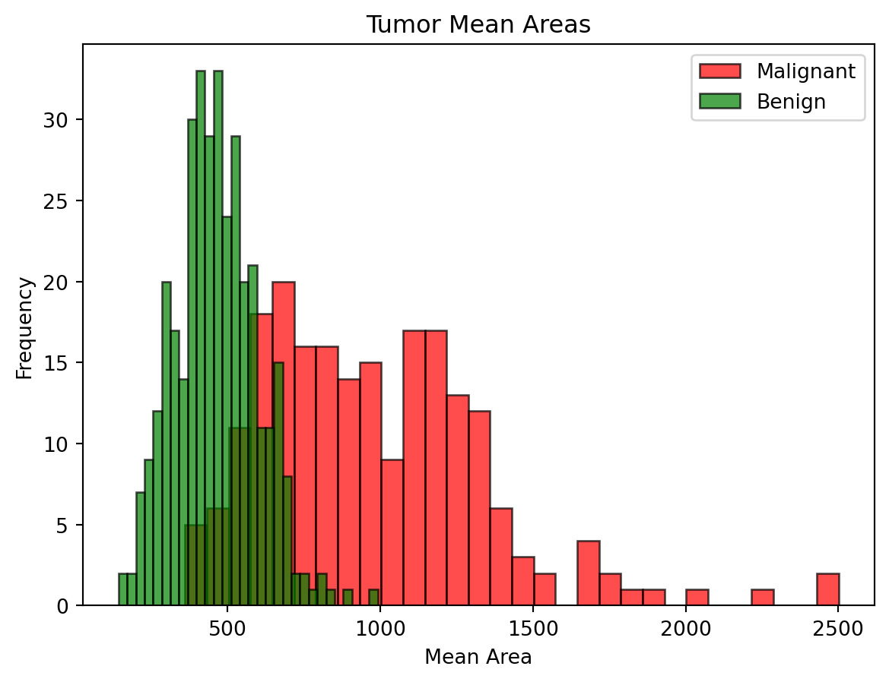
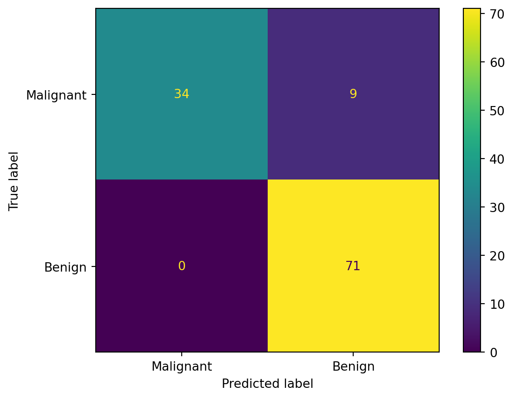

from sklearn.datasets import load_breast_cancer
cancer = load_breast_cancer()
X = cancer.data
y = cancer.targetLet’s explore probability and random variables by taking a look at Naive Bayes classifier. Let’s use the breast cancer dataset again.
Let’s try to determine whether a tumor is benign or malignant only based on the the tumor’s mean area. In this dataset, mean area is in column 3.
mean_area_true = X[y == 0, 3]
mean_area_false = X[y == 1, 3]Let’s plot histograms for both malignant and benign tumors to see their distributions.
import matplotlib.pyplot as plt
plt.hist(mean_area_true, bins=30, color='red', alpha=0.7, label='Malignant', edgecolor='black')
plt.hist(mean_area_false, bins=30, color='green', alpha=0.7, label='Benign', edgecolor='black')
plt.title('Tumor Mean Areas')
plt.xlabel('Mean Area')
plt.ylabel('Frequency')
plt.legend()
plt.show()
As we can see, benign tumors tend to be smaller in area compared to malignant tumors. But there is some overlap, so it would be difficult to predict whether a tumor is cancerous or not based only on its area.
Let’s use Naive Bayes to see how it performs on this data. Naive Bayes uses Bayes’ theorem to predict labels. Here is Bayes’ theorem:
\(P(A|B) = \frac{P(B|A)*P(A)}{P(B)}\)
In our case, event A is the probability a tumor is benign/malignant, and event B is the mean area of the tumor. So given the mean area of each tumor, Naive Bayes would calculate the probability of each tumor being benign/malignant.
Let’s do a train test split with a test size of 20%.
from sklearn.model_selection import train_test_split
X_train, X_test, y_train, y_test = train_test_split(cancer.data[:, 3].reshape(-1, 1), cancer.target, test_size=0.2, random_state=42)Let’s use Gaussian Naive Bayes from scikit-learn as our model.
from sklearn.naive_bayes import GaussianNB
nb_classifier = GaussianNB()
nb_classifier.fit(X_train, y_train)
y_pred = nb_classifier.predict(X_test)We trained the model on the training set, and used the test set to get the model's predictions. Let’s compare the predictions to the actual labels.
from sklearn.metrics import accuracy_score
accuracy = accuracy_score(y_test, y_pred)
print(f"Accuracy: {accuracy}")Accuracy: 0.9210526315789473When we compare the predictions to the actual labels, and we get 92.1% accuracy. That’s not bad. It’s not as good as either classification model we used, but here we only used one column of the dataset. Let’s see the confusion matrix for the predictions.
from sklearn.metrics import confusion_matrix, ConfusionMatrixDisplay
cm = confusion_matrix(y_test, y_pred)
ConfusionMatrixDisplay(confusion_matrix=cm, display_labels=['Malignant', 'Benign']).plot();
Most of the predictions were correct, but the model predicted that 9 malignant tumors were benign. That’s not good! To improve performance, we could try using more columns from the dataset.